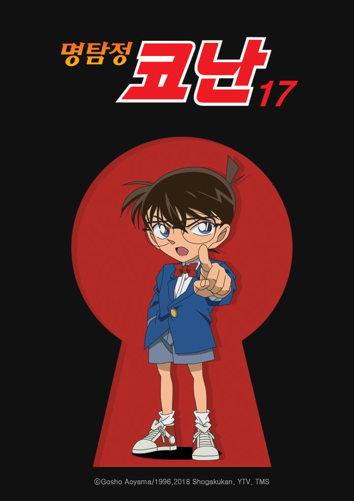
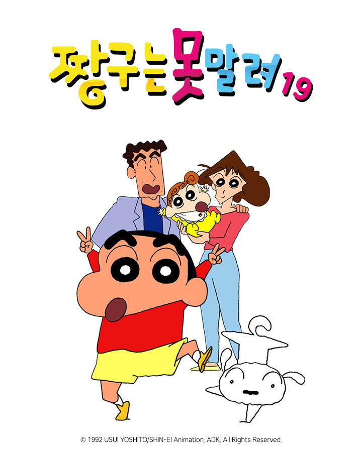

명탐정 코난17
아동 문학가로 활동했던 소정숙이 살해되는 사건이 발생한다.
용의자는 조카인 호영과 가사도우미인 혜미, 그리고 헌책방 사장인 태섭.
하지만 용의자 모두 알리바이가 있는 상황이라 골롬보는 사건 해결에 어려움을 겪는데...
단 하나의 진실을 밝힐 코난이 돌아왔다!

| 프로그램 회차 정보 |
날짜 및 시간 |
방송시간 |
| 명탐정코난 17기 1화 |
2019-12-06 15:00 |
30분 |
| 명탐정코난 17기 2화 |
2019-12-06 15:30 |
30분 |
| 명탐정코난 17기 3화 |
2019-12-06 16:00 |
30분 |
| 명탐정코난 17기 4화 |
2019-12-06 16:30 |
30분 |
| 명탐정코난 17기 5화 |
2019-12-06 17:00 |
30분 |
| 명탐정코난 17기 6화 |
2019-12-06 17:30 |
30분 |
잠뜰TV
새로운 어드벤쳐 스카이블럭 세상에 여러분을 초대합니다~
수습 행정관 잠뜰, 상사의 부름을 받고 아주 중요한 원소 배달을 떠나는데..
원소를 배달하면서 벌어진 사건들!! 지금 공개됩니다~
| 프로그램 회차 정보 |
날짜 및 시간 |
방송시간 |
| 잠뜰TV 1화 |
2019-12-07 15:00 |
30분 |
| 잠뜰TV 2화 |
2019-12-07 15:30 |
30분 |
| 잠뜰TV 3화 |
2019-12-07 16:00 |
30분 |
| 잠뜰TV 4화 |
2019-12-07 16:30 |
30분 |
| 잠뜰TV 5화 |
2019-12-07 17:00 |
30분 |
| 잠뜰TV 6화 |
2019-12-07 17:30 |
30분 |
짱구는 못말려19
예쁜 누나와 초코비를 좋아하는 5살 짱구
살인적인 발냄새를 가진 아빠
세일과 미남을 좋아하는 엄마
귀여운 여동생 짱아
그리고 귀여운 강아지 흰둥이!
이들의 평범하지만 신나는 일상 스토리!

| 프로그램 회차 정보 |
날짜 및 시간 |
방송시간 |
| 짱구는 못말려 19 1화 |
2019-12-08 15:00 |
30분 |
| 짱구는 못말려 19 2화 |
2019-12-08 15:30 |
30분 |
| 짱구는 못말려 19 3화 |
2019-12-08 16:00 |
30분 |
| 짱구는 못말려 19 4화 |
2019-12-08 16:30 |
30분 |
| 짱구는 못말려 19 5화 |
2019-12-08 17:00 |
30분 |
| 짱구는 못말려 19 6화 |
2019-12-08 17:30 |
30분 |